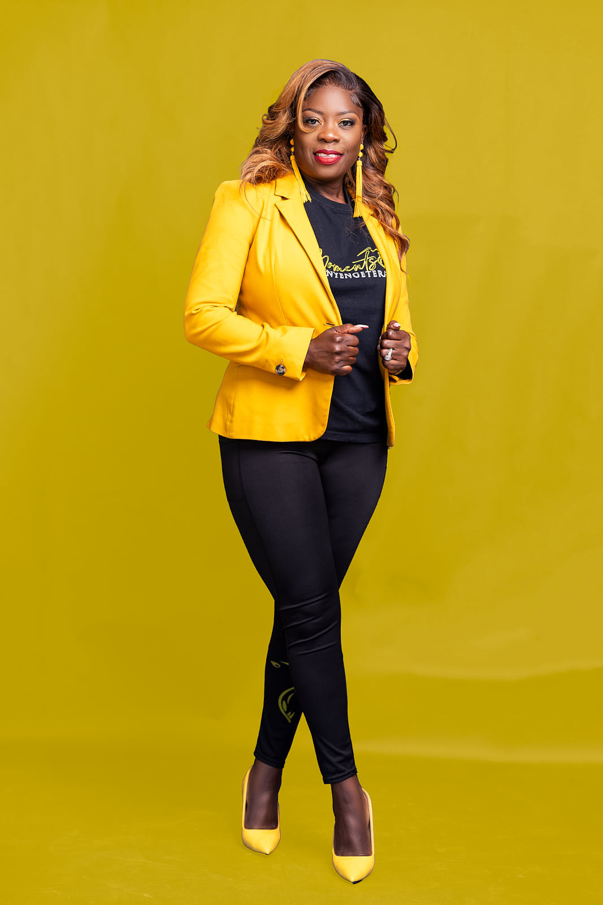
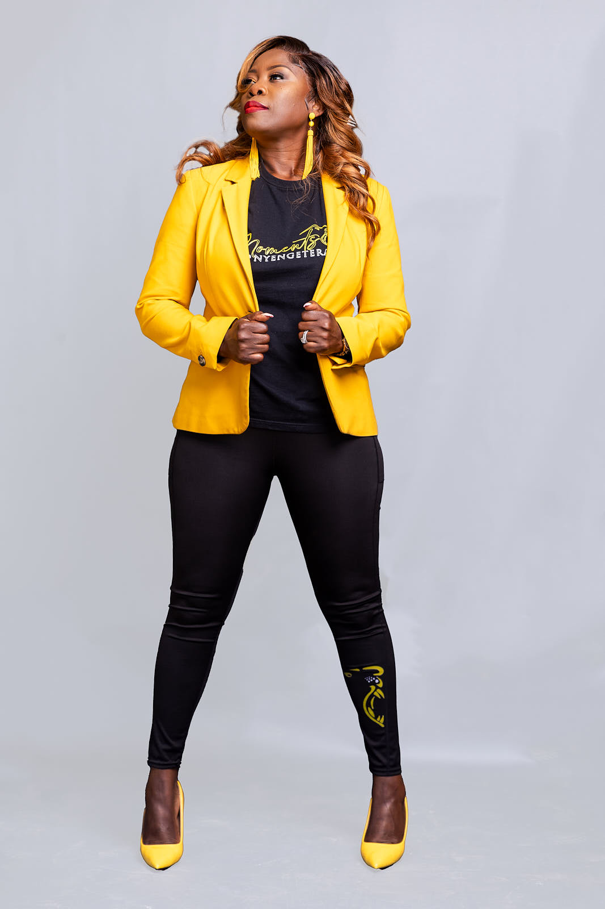

Who is Nyengeterai?
I am the CEO OF True Reflections,personal brand, an international transformational speaker, podcast host, a life coach.
→ I have coached thousands of women ,youth and more. I share my message with various groups of people at live events.
→ I am on a mission to shift mindsets and inspire action. I work with women and the youth from diverse backgrounds.
→ I am the founder of the I am Women's Conference in Zimbabwe.My vision is to touch lives by inspiring them and stimulating their inner core to achieve their dreams, attain their greatest potential, and live a meaningful life full of endless possibilities.
→ My purpose is to connect with the soul of my audience. I love people, connecting with the human spirit, touching the human soul, and inspiring people to bring out the best possibilities in them from within.
→ I have coached thousands of women ,youth and more. I share my message with various groups of people at live events.
→ I am on a mission to shift mindsets and inspire action. I work with women and the youth from diverse backgrounds.
→ I am the founder of the I am Women's Conference in Zimbabwe.My vision is to touch lives by inspiring them and stimulating their inner core to achieve their dreams, attain their greatest potential, and live a meaningful life full of endless possibilities.
→ My purpose is to connect with the soul of my audience. I love people, connecting with the human spirit, touching the human soul, and inspiring people to bring out the best possibilities in them from within.

